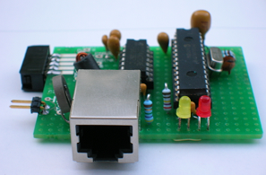

september 2006
RPD Ethernet
This module is a 10 Mbit/s full duplex ethernet, based on the ENC28J60. For using this board on the RPD mother board, it's absolutely necessary, to get your hands on a silicon revision B5 or higher for the ENC-chip, otherwise you'll have troubles addressing the MAC registers reliable.
The following protocols are realized in JAL v2 ARP / ICMP-ping / TCP-IP-http. Multiple connections are allowed.
The module fits on a half RPD-module board.

The circuit is straight forward, according to DS39662A, page 7/8. In the meanwhile uChip has published DS39662B, where page 7 shows a different network connection.
The resistors R9, R10 and R11 are not mentioned in the uChip docs, but are absolutely necessary when interfacing a 5V PIC to the 3V3 ENC-chip. Not mounting these resistors, results in reflections on the wires (ringing), and because the ENC-chip is very fast and has a low detection level, this will result in a unreliable SPI communication.
The value of R1 depends on the silicon revision of the ENC-chip:
B1,B4: R1 = 2k7
B5: R1 = 2k32
The SPI output of the ENC-chip should be fed through a fast level converter to the PIC, a single transistor will not function, due to the parasitic capacities. Of course it's better to use a single buffer, but I didn't have any lying around. Texas Instruments has also very nice level converters.
For the connector, I used the LF1S022, with build-in transformers (available from http://www.voti.nl).
Another point of attention are the decoupling capacitors C9..C15, they really need to be mounted close to the pins !!
LED-B is connected to ground, so auto half-duplex is selected.